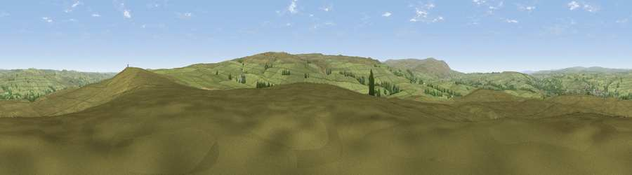

Viewpoint near Haltwhistle
#15205 in England · top 41% of its area beats it · near HaltwhistleThe view, rendered

A 360° render of this exact spot computed from the terrain model, tree cover and land cover — summer colours, afternoon light, calibrated against photographs of famous viewpoints. Real trees, hedges and buildings will differ in detail.
The panorama
Grey silhouette: terrain skyline in each direction (720 bearings, Earth curvature and refraction included). Dashed green: skyline with trees (+15 m) and buildings (+8 m) as obstacles. Blue strip: how far the ground is visible on each bearing.
Where the view opens
Wedge length = distance to the farthest visible ground on that bearing (vegetation-aware). Rings at 10, 25 and 50 km.
What fills the view
95% grassland · 4% woodland ·
Angular shares of the visible panorama (visual magnitude), not map area. Landscape diversity 0.09 (0–1 Shannon).
Key numbers
More beautiful places nearby
The staircase of upgrades: each row has a higher view potential than everything closer. Driving times are estimates from straight-line distance, calibrated against real road routing — check an actual route before setting out.
| Place | Direction | Drive | Score |
|---|---|---|---|
| Viewpoint near Melkridge | ENE · 1 km | ~3 min | 61.1 |
| Viewpoint c11151_7470 | SSE · 4 km | ~8 min | 68.4 |
| Viewpoint near Lambley | SSW · 4 km | ~9 min | 69.7 |
| Viewpoint near Slaggyford | S · 7 km | ~14 min | 70.0 |
| Viewpoint near Melkridge | NNE · 7 km | ~15 min | 70.6 |
| Viewpoint near Halton Lea Gate | WSW · 9 km | ~18 min | 72.0 |
| Viewpoint near Hallbankgate | WSW · 12 km | ~22 min | 73.4 |
| Viewpoint near Slaggyford | SW · 12 km | ~23 min | 73.7 |
54.93994, -2.44053 · source: screening · position refined by local search. Computed location — check access rights before visiting.